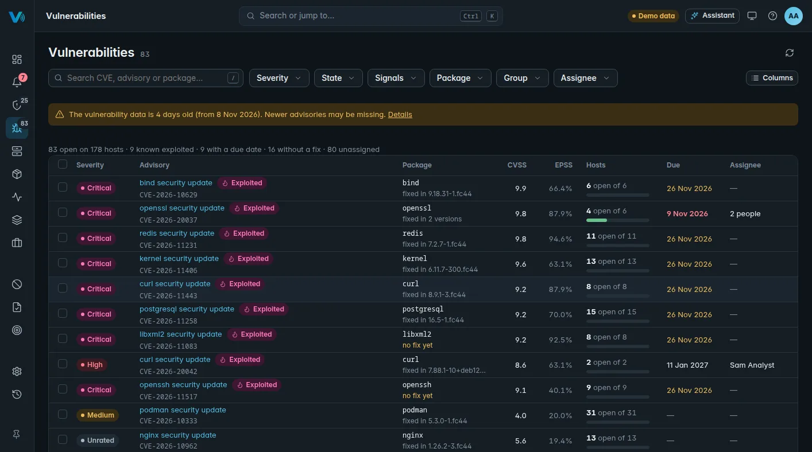
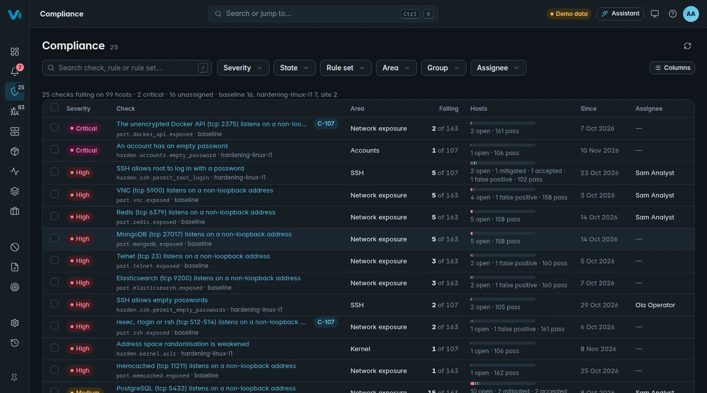
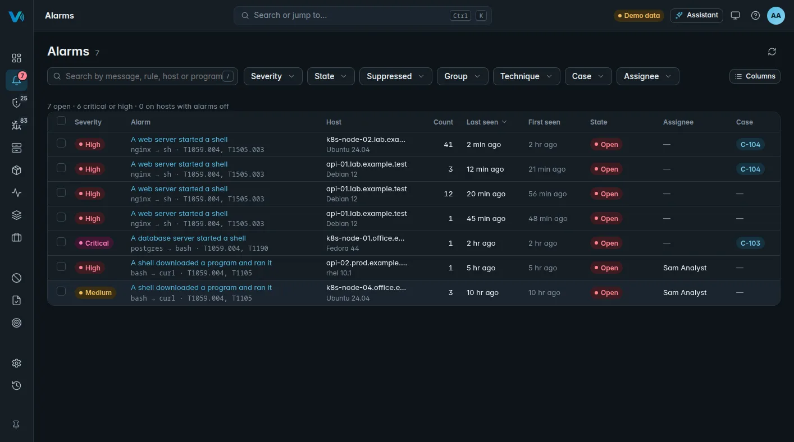
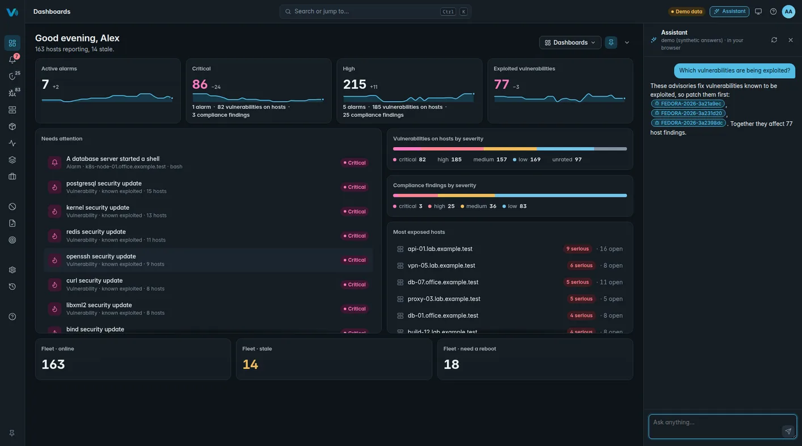

Four things, done properly
Know what's vulnerable
Every host reports its installed software. OpenVIBES matches it against the distributions' own security advisories and puts known-exploited vulnerabilities first.
- Fedora, Debian, Ubuntu, Rocky Linux and AlmaLinux advisories
- Software, open ports and services per host

Check your baseline
Signed rules run on every host. The baseline flags services exposed to the network, such as the Docker API, Redis or a database, and risky servers like Telnet and rsh. Linux hardening checks sshd, kernel settings, file permissions, mounts and more. Write your own rules and sign them on your platform.
- Baseline and Linux hardening rules included
- Choose which host groups run which rules
- Your own rules, your own signing key

Hear about threats in seconds
The agent watches every program start, with eBPF and kernel audit as the fallback. A web server starting a shell is in your console seconds later, with why the rule fired and the process tree.
- Built-in rules, e.g. a web or database server starting a shell, each mapped to MITRE ATT&CK
- Quiet by default; suppress what is normal for you, with a second person's approval if you want it
- Triage, cases and an audit trail

Ask in plain words
An optional assistant runs on your own platform. Ask what to fix first, which hosts are stale, or what a finding means.
- With the bundled model, nothing leaves your network
- Answers link to the hosts and findings they are about

Built for people who are tired of heavy security tools
Interface first
Fast, uncluttered screens that each answer a question.Light agent
A small Rust agent with a strict footprint budget.Quiet by default
Alerts on what matters; everything is tunable.Yours to shape
Your own rules, collection, noise and views.Your data stays yours
Self-hosted. No vendor cloud, no telemetry.No licence locks
Every feature is in the Apache-2.0-licensed project.Young, and moving fast
Runs on today
- Platform: Fedora 44 (x86_64), online or with no internet at all (offline kit), 2 GB RAM and 1 vCPU: in the lab that size served 500 simulated agents without swapping
- Agents: Fedora 44, AlmaLinux and Rocky Linux 9+, Debian 12+, Ubuntu 22.04+ and Arch (x86_64), each from its own signed package, installed with the command the console gives you
- Windows agent (preview): Windows 10 and 11, Windows Server 2016 to 2025; software inventory for now
- Threat alarms from eBPF on Linux 5.8 and later (kernel audit as the fallback)
- Vulnerability data for Fedora, Debian, Ubuntu, Rocky Linux and AlmaLinux hosts, also without internet, from a mirror or a file
New in 0.3
- Roles and people: your own roles, host groups and labels, and single sign-on through SAML
- Linux hardening checks on every host, switched per host group
- A list and a page for everything: hosts, alarms, vulnerabilities, compliance, software, ports, services and cases, with saved views
- A finished admin menu on the platform host: guided install, updates with a backup first, repair and certificates that renew themselves
Next
- Fully offline agent install from the console (0.3.1)
- Alarms from your UniFi gateway's IPS/IDS, set up in the console
- Windows: ports, services, threat alarms and vulnerability matching
- Platform on AlmaLinux and Rocky Linux
From nothing to your first findings
- Install the platform on a Fedora 44 host, as your own user:
sudo sh -c "$(curl -fsSL https://openvibes-project.github.io/install.sh)" - Install. The admin menu opens by itself: choose Quick install, enter the host name your other hosts will use, choose Install, and write down the admin password it shows at the end.
- Add hosts from the console: Settings › Enrollment › Add a host gives you a command to run as root on each Linux host, and an install line for Windows.
Full walkthrough: the quick setup guide. Prefer to read the script first? Download install.sh, read it, then run sudo sh install.sh. No output at all means the download failed. Package repository and signing key: Packages.